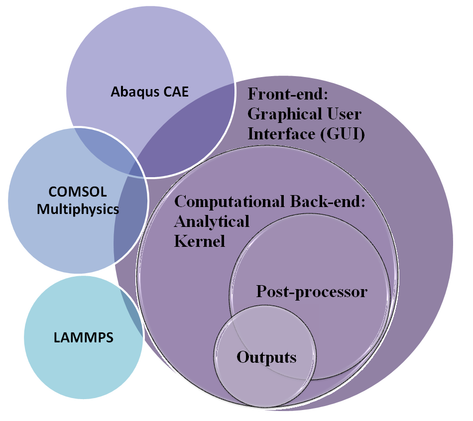
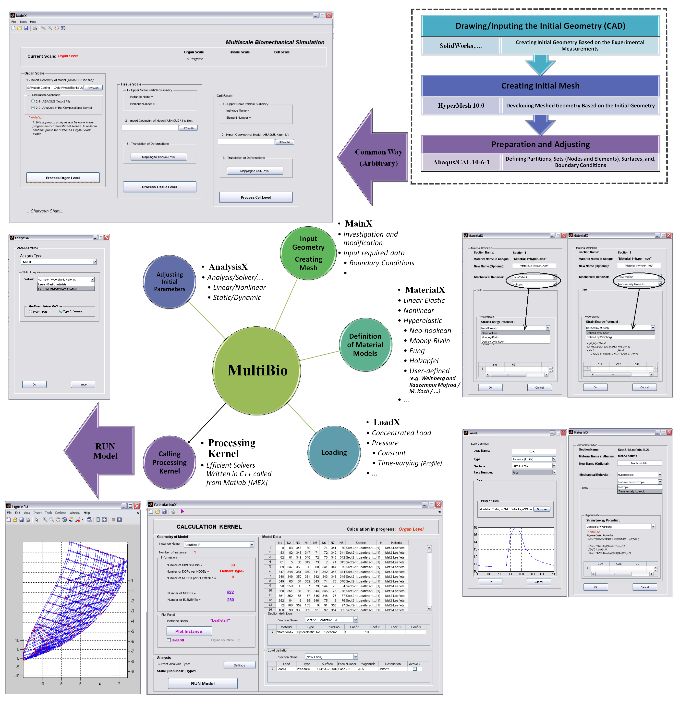
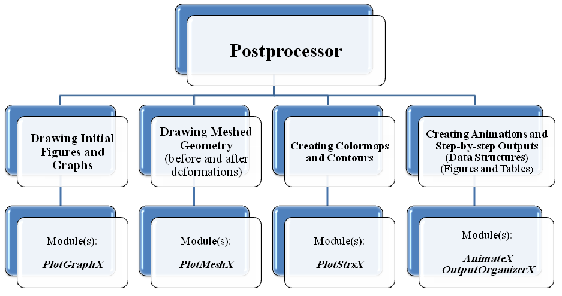

Predictive computational models are a significant tool in the study of biomechanical structures. In general, biomechanics is defined as the mechanical discipline that investigates the effects of physiological forces acting on and within the biological structures. As in many other biological phenomena, many length scales are crossed by biomechanics research: intracellular, multicellular, and extracellular matrices; and tissue, organ and multiorgan systems. It is well established that the effect of forces at higher scales influence the behavior at lower scales and that lower-scale properties influence the higher-scale response. However, computational methods that incorporate these interactions in biomechanics are relatively rare.
In my researches, a hierarchical multiscale approach is employed to investigate how mechanical stimuli in the organ scale are transmitted to microstructure in the cell scale. As an important biomechanical structure, the aortic heart valve, as a soft tissue, constructs a complex fiber-reinforced composite structure that the mechanical communication from the larger scales affects its active biomechanical processes. For instance, any organ-scale motion deforms the tissue, which in turn deforms the interstitial cells (ICs).
In order to study this communication, a simple one-way coupling is utilized to relate different scale simulations by passing data from the largest scale to the smallest one. First, the organ-level simulation is performed. The results of element deformations at the organ-level simulation are applied, as boundary conditions, to a representative volume element (RVE) of tissue. Then, deformations from the tissue-level simulation are passed similarly to the cell-level simulation and the cell aspect ratio will be extracted. The aortic valve leaflets undergo large displacements through the blood pressure and due to anisotropic hyperelastic material constituents. Accordingly, a general code has been developed in C++, Matlab and Java to predict the highly nonlinear and transversely isotropic material behaviors based on the total lagrangian procedure of large deformation theory within a multilevel finite element method.
While the models represent a simplified version of the native aortic valve, a good agreement with the experimental data can be observed. Therefore, the proposed multiscale finite element approach can be used in the study of the mechanical behavior of heart valves. Such a procedure may also be regarded as a predictive multiscale modeling in computational biomechanics. The developed code can also be employed not only for analysis of native biomechanical systems but also in the design of tissue engineered constructs, such as tissue-engineered heart valves.


MultiBio is a general code for Implementation of multiscale analysis techniques in modelling of biomechanical systems. The code has been developed by Shahrokh Shahi, a Master of Science student in structural engineering.
MultiBio is based on an analytical kernel majority written in C++ which serves as a computational back-end. There are many complications one may encounter in biomechanical simulations. For instance, different types of biological soft tissues are composed of a dense network of primarily collagen and various elastin fibers embedded in a matrix of ground substance containing proteoglycans. On account of such a complexity in the structure of these biological materials, some noticeable complexity can be observed in their mechanical behaviors, such as nonlinear stress-strain relationships, anisotropy, viscoelasticity, poroelasticity, etc. On top of that, as structural materials, the fibered soft tissues usually undergo large deformations even under normal physiological load conditions. All of such characteristics should be considered in any development of computational code for biomechanical simulations. For such reasons, both linear and nonlinear finite element methods have been implemented in the analytical kernel. Furthermore, many hyperelastic constitutive material models are built in the package which can be utilized by users, conveniently.
To be more user-friendly, the front-end part of the package is a graphical user interface (GUI) developed in MATLAB to enable users to handle the proper simulation through computational back-end. Finally, a post-processor has been written in Java to present the outputs in an appropriate manner.
All of the aforementioned parts work as a versatile tool for utilizing multiscale approaches in simulation of biomechanical systems. Although MultiBio is composed of over 30000 lines code in different programming language, it is designed to be easy to understand, modify, and, extend with new applications.
The program can effectively be linked to some other computational software programs. The input files (*.inp) created in Abaqus CAE can completely be read through a module in MultiBio inputting panel. Moreover, the results of Abaqus analysis can be inputted and processed as an initial data for simulation of a model in another scale, by dint of MultiBio. It could also be linked to COMSOL Multiphysics for some multiphysics simulations in upper-levels such as organ scale. Recently, a new module is developed which provides a simple way to link MultiBio to LAMMPS for molecular dynamics (MD) simulations of microstructure in lower-levels. The following diagram clearly illustrates the various parts of MultiBio, schematically.
It is hopefully anticipated that the code could play a beneficial role in understanding the theoretical and practical implementation of multiscale approaches in biomechanical simulations. The significant modules of the GUI and their functions are briefly described in the following figures.
The post-processor consists of some principal modules which are briefly demonstrated in the following diagram.
For instance, the animations on the left exhibit a human aortic heart valve under physiological blood pressure. Such a result is obtained through organ-scale simulation by taking into account large deformations and nonlinear anisotropic hyperelastic material models. The results will automatically be applied to a representative volume element (RVE) of tissue, subsequently.